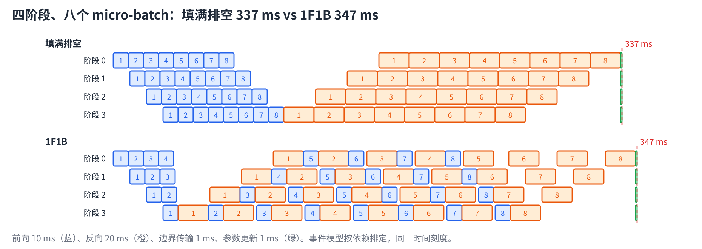
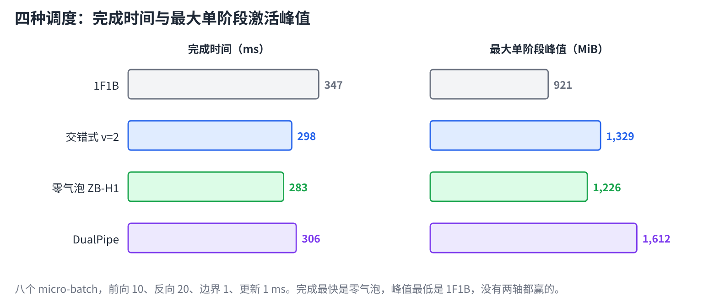
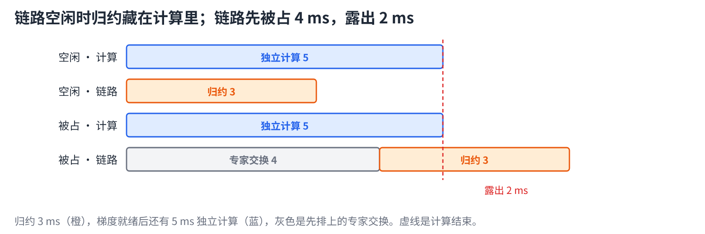
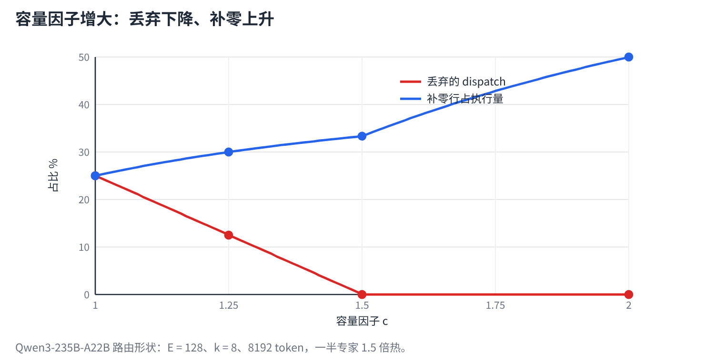
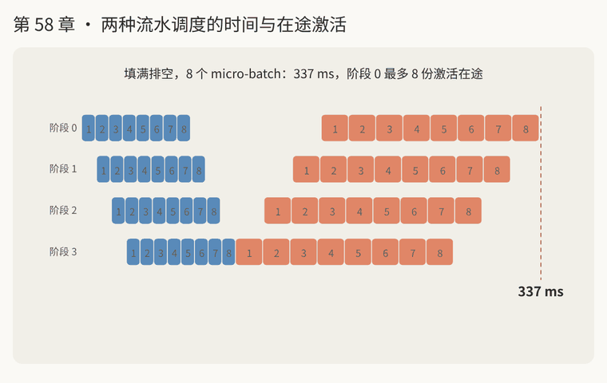

第 58 章 · 流水调度与通信重叠：气泡、激活驻留与藏不住的那 0.08 秒
本地运行
git clone https://github.com/wikieden/ai-infra-from-constraints
cd ai-infra-from-constraints/code/notebooks
pip install jupyterlab torch numpy
jupyter lab ch58_pipeline_overlap.ipynb也可以下载后直接用 VS Code 打开 .ipynb 运行。需要 GPU 的章节在 Colab 里选「代码执行程序 → 更改运行时类型 → GPU」。
本章回答：梯度累积时损失除以谁，为什么会让梯度从 0.32 变成 0.30 甚至 0.04？填满排空 337 ms、1F1B 347 ms，1F1B 到底换来了什么？交错式、零气泡、DualPipe 各用什么换更小的气泡？ZeRO-3 每步要传 385 GB，为什么只暴露 0.08 s？MoE 的容量因子、梯度切桶和不等长序列各怎样改变一步的时间？
讲解日期：2026-11-24 · 上一章：第 57 章 训练状态的分片、重计算与卸载 · 下一章：第 59 章 数据输入、checkpoint 与故障恢复
对应原文：materials/ai-infra-book/manuscripts/10-训练系统.md§10.3 L299–L488（图 10-17 至 10-29）
本章缩写：1F1B = One Forward One Backward（一次前向 / 一次反向）· ZB = Zero Bubble（零 / 气泡）· PP = Pipeline Parallelism（流水线 / 并行）· P2P = Peer-to-Peer（点对点）· EOS = End Of Sequence（序列 / 结束）。全部缩写见 缩写与术语表
讲解
第一步：梯度累积不能改分母（2026-11-24）
类比：全班平均分。 按人头平均和按小组先平均再平均，大组和小组人数不一样时结果不同；分批算的时候，每批都要除以全班总人数，而不是各批自己的人数。
原文 L303–L322：micro-batch \(k\) 的有效 token 集合 \(S_k\)，总数 \(L\)：
求和与求导可交换，每个 micro-batch 都用同一个 \(L\) 作分母，累积完再统一裁剪和更新。
例：八条回答，四条各 2 个 token（每 token 损失 \(\theta/5\)），四条各 3 个（\(2\theta/5\)），共 20 个：
| 做法 | 梯度 |
|---|---|
| 按 token 平均（长回答占 60%） | 0.32 |
| 先按回答平均再平均（长短各半） | 0.30 |
| 已除以 20，累积后又除以 8 | 0.04 |
设计案例：384 条序列，32 卡每卡累积 12 个 micro-batch、48 卡累积 8 个，目标函数不变。
一句话：micro-batch 只改执行顺序，不能改每个 token 的权重。
第二步：两根轴：气泡与激活驻留（2026-11-24）
类比：四道工序的流水线。 先把所有零件都过完第一道才开始倒着返工（填满排空），中间堆满半成品；1F1B 是做一个返一个，半成品少，但前后道互相等。
原文 L324–L360：\(p\) 个平衡阶段、\(m\) 个 micro-batch：
\(p = 4\)、\(m = 8\)：\(u = 72.7\%\)。
例：36 层分四个九层阶段；前向 10 ms、反向 20 ms、边界传输 1 ms、更新 1 ms：
- 填满排空：\(11 \times 30 = 330\) ms + 前向填充 3 + 反向排空 3 + 更新 1 = 337 ms。
- 1F1B：阶段 0 前四个前向 40 ms 完成，第一份梯度 106 ms 才回来；阶段 3 在 93 ms 做完第二个反向，第三个前向输入 95 ms 才到，空 2 ms……总共 347 ms，慢约 3%。
- 换来的是显存：激活与收发缓冲最大值从约 2.57 GB 降到 0.97 GB（−62%）。只给 1 GB 时，只有 1F1B 跑得起来。

图 58-1 · 蓝前向、橙反向、绿更新，同一时间刻度。两者气泡都是 (p−1)(t_f + t_b)，1F1B 多出来的是依赖等待。
一句话：比较调度要同时看完成时间和激活驻留；"1F1B 更好"只在显存那根轴上成立。
第三步：更小的气泡，用别的资源换（2026-11-24）
类比：填缝。 墙上的缝（气泡）可以拿更小的砖填（拆细），可以把不急的活挪进去（\(dW\) 延后），也可以两头同时砌（双向）。每种都要多付点什么。
原文 L362–L408：
| 调度（8 个 micro-batch） | 完成 ms | 每卡空闲 ms | 阶段 0 峰值 MiB | 手段 | 代价 |
|---|---|---|---|---|---|
| 填满排空 | 337 | 96 | 1,840（阶段 3 为 2,448） | 无 | 激活驻留最高 |
| 1F1B | 347 | 106 | 921 | 无 | 比填满排空慢约 3% |
| 交错式 1F1B，v = 2 | 298 | 57 | 1,329 | 每卡层块拆成 v 段 | 前向消息 24 → 56 次 |
| 零气泡 ZB-H1 | 283 | 42 | 921（阶段 3 为 1,226） | \(dW\) 延后填空隙 | 后段激活留到 \(dW\) |
| DualPipe | 306 | 65 | 1,228（阶段 1、2 为 1,612） | 两端相向注入 | 每卡两份参数 |
- 交错式气泡比例 \(\frac{1}{v}\cdot\frac{p-1}{m}\)。
- 零气泡：\(dX\) 在关键路径上要尽早做，\(dW\) 只给本层累积，可以挪进空隙；气泡 1F1B \((p-1)(T_F + T_B + T_W)\) → ZB-H1 \((p-1)(T_F + T_B - T_W)\) → ZB-H2 \((p-1)(T_F + T_B - 2T_W)\)。
- DualPipe 气泡 \((PP/2 - 1)(F\&B + B - 3W)\)。
- 16 个 micro-batch：1F1B / 交错 / 零气泡 / DualPipe = 599 / 538 / 523 / 558 ms，排序不变；1F1B 气泡占比已从 37.5% 降到 18.8%，拆细的相对收益变小，而各自的代价不随 \(m\) 缩小。

图 58-2 · 完成时间最短的是零气泡，峰值最低的是 1F1B，没有一种两轴都赢。容量紧时先按峰值排除，再比时间。
一句话：压气泡要么多通信、要么多驻留激活、要么多存参数。
第四步：通信能藏多少（2026-11-24）
类比：做饭时烧水。 水在切菜时烧好最好；要是灶台先被别人占了 4 分钟，水就得等切完菜还在烧。
原文 L410–L438：归约 3 ms，梯度就绪后还有 5 ms 独立计算：链路空闲时全藏住；链路先被专家交换占 4 ms，就有 2 ms 延伸到计算之后，这是通信等待。
ZeRO-3 每步通信：每个 micro-batch 两次 AllGather（前向、反向各收一遍 BF16 权重）+ 一次 ReduceScatter：
48 卡 \(m = 8\) 约 385 GB，32 卡 \(m = 12\) 约 571 GB。RTX 4090 没有 NVLink、不支持卡间 P2P，同机交换也要经主机内存，全部收发都过各自的 PCIe 4.0 x16（每方向 32 GB/s）：链路时间 12.0 s 和 17.9 s。每卡配一张 200 Gbit/s 网卡，网卡不是瓶颈。
- 每个 micro-batch 链路 1.50 s，计算 6.53 s；收一层参数约 12 ms，远短于这一层的计算 → 大部分藏住。
- 藏不住的只有一步里第一次 AllGather 和最后一次 ReduceScatter：都作用于 1.24 GB 的词嵌入，合计约 0.08 s。
- 每步（输入就绪）：32 卡 78.4 s，48 卡 52.3 s。
- 收益上限：一段 1.3 s 的归约只有 0.2 s 露在外面，消掉它最多省 0.2 s。
- MegaScale：175B、全局 batch 6144，3072 → 12288 卡，每步 23.7 → 6.3 s（理想 5.9），约 93% 扩展效率。

图 58-3 · 数据依赖给最早开始时刻，资源争用把它推迟，后续依赖决定这段是否拖长整步。
场景代码：DDP 的梯度分桶大小就是"启动次数 vs 提前发送"的旋钮（真实 API）：
from torch.nn.parallel import DistributedDataParallel as DDP
model = DDP(model, bucket_cap_mb=25, # 桶越小越早发、启动越多
gradient_as_bucket_view=True) # 梯度直接写进桶，省一次拷贝
一句话：链路时间不等于等待时间；先算藏住多少，露在外面的才算进一步。
第五步：MoE 与长上下文让工作不均（2026-11-24）
类比：餐厅定额。 每个厨师最多接 \(c\) 倍平均量的单，超了就退单（丢弃），没满的灶台也照样占着（补零）。
原文 L440–L487：
Qwen3-235B-A22B（\(E = 128\)、\(k = 8\)、8192 token，一半专家 1.5 倍热）：
| \(c\) | 每专家行 | 丢弃 | 补零占执行量 |
|---|---|---|---|
| 1.0 | 512 | 25% | 25% |
| 1.25 | 640 | 12.5% | 30% |
| 1.5 | 768 | 0 | 33% |
| 2.0 | 1,024 | 0 | 50% |

图 58-4 · 路由越均衡，所需的 c 越接近 1。辅助损失或无辅助损失的偏置调整都把分布往均衡推。
- 梯度切桶：72 MiB FP32 专家梯度、四个成员环形 AllReduce、25 GB/s、每次 0.02 ms：整桶 4.55 ms 塞不进 2 ms 的空隙；切三桶每桶 1.53 ms，各自塞进一个空隙，总处理 4.59 ms 略多，但计算后的等待少了。400 Gbit/s 整桶 2.28 ms 仍塞不进。
- 不等长序列：因果配对 \(s(s+1)/2\)。4096 + 4096 = 16,781,312 对，7168 + 1024 = 26,218,496 对，多 56%。打包减少填充，按长度分组让各卡三角形面积接近，上下文并行把长序列分到多卡。
一句话：MoE 用容量因子在丢弃和补零之间换；长度不均让同样的 token 数对应不同的注意力工作。
动画演示：填满排空 vs 1F1B

可交互版：animations/58-pipeline-overlap.html（选择：填满排空 / 1F1B；滑块：micro-batch 数 1–16；边界传输 0–3 ms）。
怎么看：
- 四行是四个阶段，蓝前向、橙反向（第二步）；
- 右边是完成时间和阶段 0 同时在途的最多激活份数；
- 播放：填满排空 8 个（337 ms、8 份）→ 1F1B（347 ms、4 份）→ 1F1B 16 个（599 ms）→ 传输改 0。
练习与作答记录
题 1（第一步）：三条回答各有 1、4、5 个有效 token，每 token 损失分别为 \(\theta\)、\(2\theta\)、\(\theta\)。按 token 平均和先按回答平均的梯度各是多少？
作答记录：（待作答）
题 2（第二步）：\(p = 8\)、\(m = 16\)，每阶段前向 5 ms、反向 10 ms，忽略传输和更新。填满排空多久？利用率多少？
作答记录：（待作答）
题 3（第四步）：64 卡 ZeRO-3、每卡累积 6 个 micro-batch，Qwen3-8B BF16。每步每卡收发多少 GB？经 32 GB/s 的 PCIe 要多少秒链路时间？
作答记录：（待作答）
口诀
分批算平均，每批都除全班人数；
先做完再返工堆满半成品，做一个返一个省地方但互相等；
填缝要么砖更小、要么挪不急的活、要么两头砌；
切菜时烧水，灶台被占了才露出来；
定额退单和空灶，两头换。
本章复习卡片
I195（损失分母：按 token 0.32、按回答 0.30、错除 0.04）、I196（填满排空 337 vs 1F1B 347 ms、峰值 2.57 vs 0.97 GB；交错 / 零气泡 / DualPipe 各换什么）、I197（ZeRO-3 V = 3m(d−1)/d·2N：385 GB、12.0 s 链路只暴露 0.08 s；容量因子表；切桶；不等长 +56%）。练习做完后，按答错、卡住的地方再补。
附录 · 延伸阅读
留给以后深入学习用，不影响本章主线。★ 是建议先读的。
推荐阅读
| 读什么 | 读哪里 | 读它为了什么 |
|---|---|---|
| ★ AII 第 10 章 | §10.3 L299–L488 | 本章原文 |
| Narayanan et al. 2021（Megatron-LM, SC'21） | 交错式 1F1B | 虚拟流水线 |
| Qi et al. 2024《Zero Bubble Pipeline Parallelism》（ICLR） | 表 2、图 3 | ZB-H1 / H2 |
| DeepSeek-V3 技术报告 | DualPipe | 双向流水 |
| MegaScale（Jiang et al., NSDI 2024） | 重叠与扩展 | 万卡实测 |
| 第 33 章 流水线并行 | b/(q + b − 1) | 推理侧的同一公式 |
数学原理
- 求和与求导交换：所以可以分批反传，但分母必须统一。
- 流水线：填充和排空共 \(p - 1\) 个空槽；拆细把槽变小，挪活把槽填满。
- 重叠：暴露 = max(0, 链路占用 + 通信 − 独立计算窗口)。
公式清单
| 公式 | 意思 |
|---|---|
| \(\mathcal{L} = \frac{1}{L}\sum_k\sum_{j \in S_k}\ell_j\) | token 平均损失 |
| \(T = (m + p - 1)(t_f + t_b)\)，\(u = m/(m + p - 1)\) | 流水线时间与利用率 |
| 交错 \(\frac{1}{v}\frac{p-1}{m}\)；ZB-H1 \((p-1)(T_F + T_B - T_W)\) | 更小的气泡 |
| \(V = 3m \frac{d-1}{d} 2N\) | ZeRO-3 每步通信 |
| \(\lfloor c \cdot \text{token} \cdot k / E \rfloor\) | 专家容量 |
代码对照：把本章的数字用代码算一遍
代码
ai-infra/solutions/chapter-code/ch58_pipeline_overlap.py，测试tests/test_ch58.py：
bash cd ai-infra/solutions/chapter-code uv run python ch58_pipeline_overlap.py uv run pytest tests/test_ch58.py
| 讲义 | 写法 | 跑出来 |
|---|---|---|
| 第一步 | token_mean_grad() |
0.32 / 0.30 / 0.04 |
| 第二步 | simulate(fill_drain(), 4)、simulate(one_f_one_b(), 4) |
337 / 347 ms；16 个 599 ms |
| 第四步 | zero3_bytes(d, m)、exposed_ms(3, 5, 4) |
385 / 571 GB；2 ms |
| 第五步 | capacity(c)、bucket_ms(...)、causal_pairs(...) |
容量表；4.55 / 1.53 ms；+56% |
代码里才看得到的 3 件事：
simulate是一个很小的事件模型：每阶段按给定顺序取下一个操作，等依赖（上一阶段前向 + 1 ms 或下一阶段反向 + 1 ms）和本阶段空闲两者中较晚的那个。它不需要任何特殊规则就复现出 337 和 347 ms。- 1F1B 的顺序是"阶段 s 先做 p − s − 1 个前向，然后前向、反向交替"，阶段 0 就是 F1 F2 F3 F4 B1 F5 …，和原文描述一致。
- 交错式、零气泡、DualPipe 的 298 / 283 / 306 ms 直接引用原文的事件模型结果，代码只验证它们的气泡下界。
自己改一改（不影响练习答案）：
- 给
simulate加零气泡：把 B 拆成 dX、dW 两个操作，dW 不被上游等待。 - 把传输改成 0，看 1F1B 是否和填满排空一样快。
- 用
capacity试"四分之一专家 2 倍热"的分布，找丢弃为零的最小 c。